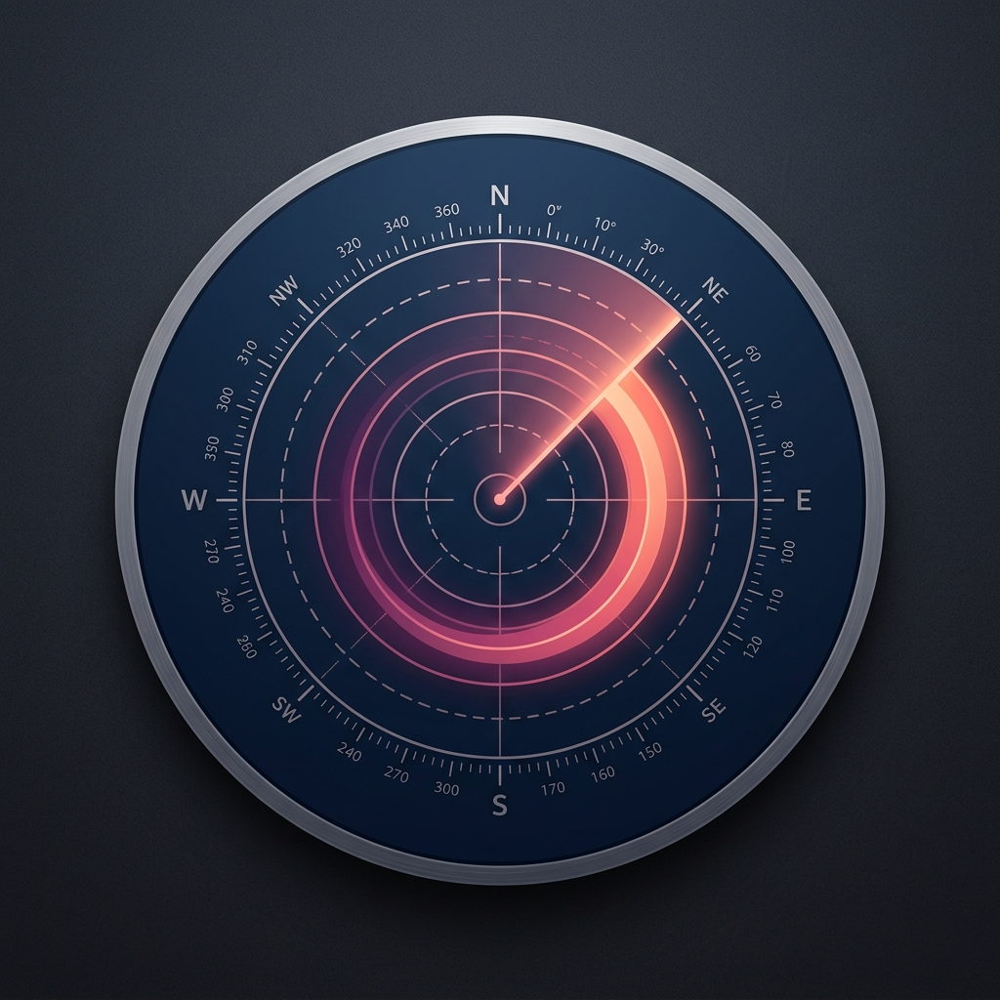
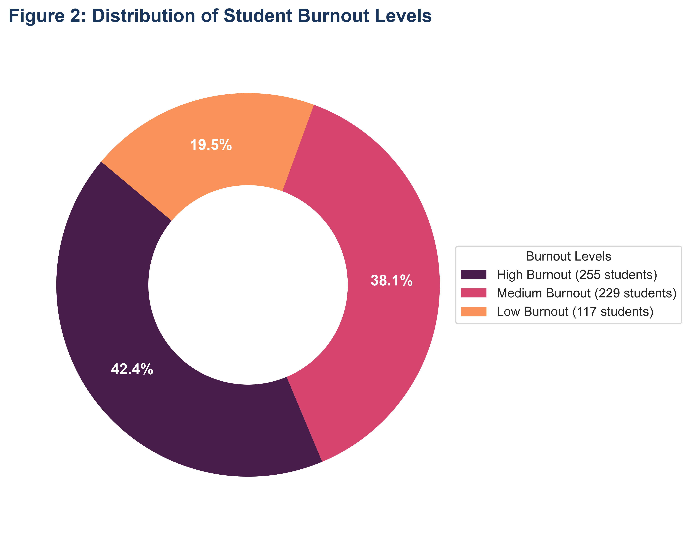
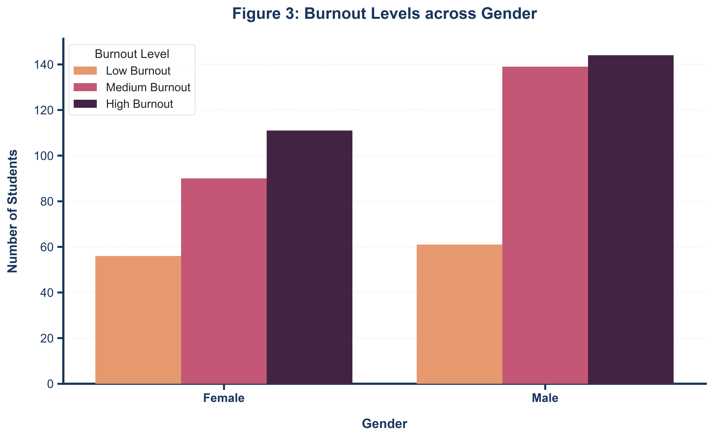

About the research behind this tool
Burnout Radar is built on an explanatory sequential mixed-methods study that trained ten supervised classifiers and a soft-voting ensemble on survey data from 601 university students in Bangladesh, then explained the champion Random Forest model with SHAP, and triangulated the findings against 20 in-depth qualitative interviews.
The strongest predictors weren't fixed demographic traits like age or gender — they were cumulative academic performance strain, the ratio of screen time to sleep, and digital escapism as an avoidance coping mechanism. This tool lets you weigh those same factors for yourself.
Methodological Architecture & Demographic Profiles
Core workflow framework, sample epidemiology, and demographic invariance charts from the research study.
 Click to Zoom 🔍
Click to Zoom 🔍
Explanatory Sequential Mixed-Methods Research Framework
Two-phase study integration: Phase 1 (Quantitative: 601 undergraduate surveys, 9 engineered composite indicators, 10 supervised classification models, SHAP feature interpretation) followed by Phase 2 (Qualitative: 20 semi-structured interviews with thematic codebook triangulation).

Click to Zoom 🔍Distribution of Student Burnout Severity Tiers
Prevalence spread across Low (33.4%), Moderate (37.6%), and High (29.0%) burnout tiers based on validated psychological cutoff scores.

Click to Zoom 🔍Gender & Demographic Stratification Comparison
Symptom severity breakdown cross-tabulated between male and female students across core academic and emotional stress metrics.